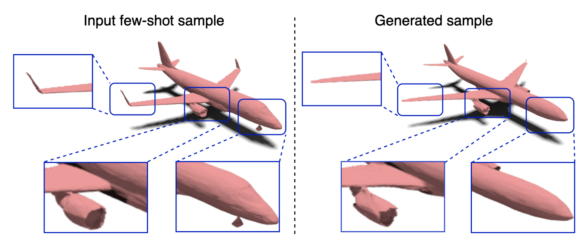
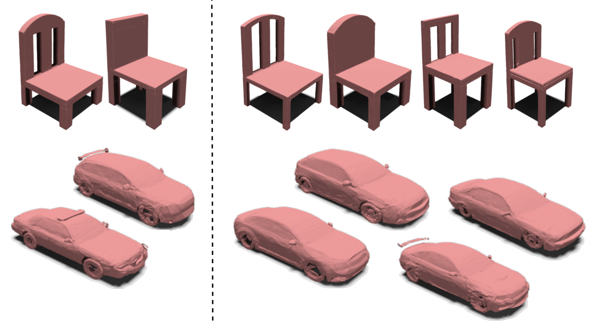

EQUIGEN: Few-shot Implicit Function Generation via Equivariance
1Shanghai Jiao Tong University, 2National University of Singapore
Abstract
Implicit Neural Representations (INRs) have emerged as a powerful framework for representing continuous signals. However, generating diverse INR weights remains challenging due to limited training data. We introduce Few-shot Implicit Function Generation, a new problem setup that aims to generate diverse yet functionally consistent INR weights from only a few examples. This is challenging because even for the same signal, the optimal INRs can vary significantly depending on their initializations. To tackle this, we propose EQUIGEN, a framework that can generate new INRs from limited data. The core idea is that functionally similar networks can be transformed into one another through weight permutations, forming an equivariance group. By projecting these weights into an equivariant latent space, we enable diverse generation within these groups, even with few examples. EQUIGEN implements this through an equivariant encoder trained via contrastive learning and smooth augmentation, an equivariance-guided diffusion process, and controlled perturbations in the equivariant subspace. Experiments on 2D image and 3D shape INR datasets demonstrate that our approach effectively generates diverse INR weights while preserving their functional properties in few-shot scenarios.
Motivation

Illustration of the Few-shot Implicit Function Generation setting with 3D INR data examples. The goal is to generate diverse INR weights from limited target samples. Source samples(top) show previously observed INRs of diverse shape categories. In practice, only limited target samples (bottom left) are available for training. The framework aims to learn a generator that can produce diverse generated samples (right) despite the limited training data. This setting addresses the practical scenario where only a few examples of new shapes are available for training.
EQUIGEN Framework Overview

The EQUIGEN framework consists of three stages: (1) Equivariant Encoder Pre-training, (2) Equivariance-Guided Distribution Modeling via diffusion, and (3) Few-shot Adaptation with equivariant subspace disturbance for diverse generation.
Our method systematically leverages the principle of equivariance in neural network weight spaces.
First, an Equivariant Encoder is pre-trained using contrastive learning and smooth augmentations to map functionally equivalent weights to similar representations in an equivariant latent space.
Second, an Equivariance-Guided Diffusion model, conditioned on these learned features, reconstructs the weight distribution while preserving symmetry properties.
Finally, for Few-shot Adaptation, we introduce controlled perturbations in the equivariant subspace to generate diverse yet functionally consistent INR weights from limited examples.
Results on 3D Shapes (ShapeNet-INRs)
EQUIGEN can generate diverse and high-quality 3D shapes from few-shot examples. Below are examples for airplanes, cars, and chairs.
Airplanes

Input few-shot airplane samples (left) and diverse generated airplane INRs (right) by EQUIGEN.
Cars and Chairs

Few-shot input samples and generated INRs for car and chair categories.
BibTeX
If you find EQUIGEN useful for your research, please consider citing our paper:
@article{huang2025few,
title={Few-shot Implicit Function Generation via Equivariance},
author={Huang, Suizhi and Yang, Xingyi and Lu, Hongtao and Wang, Xinchao},
journal={arXiv preprint arXiv:2501.01601},
year={2025}
}